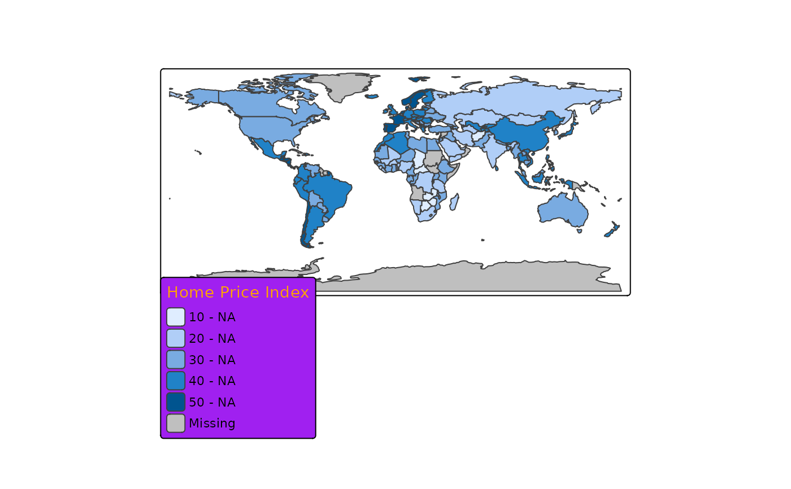

Legend specification
Usage
tm_legend(
title,
show,
orientation,
design,
reverse,
na.show,
position,
group_id,
width,
height,
z,
title.color,
title.size,
title.fontface,
title.fontfamily,
title.alpha,
title.padding,
title.align,
text.color,
text.size,
text.fontface,
text.fontfamily,
text.alpha,
format,
frame,
frame.lwd,
frame.r,
bg,
bg.color,
bg.alpha,
absolute_fontsize,
item.height,
item.width,
item.space,
item.na.height,
item.na.width,
item.na.space,
item.shape,
ticks,
ticks.disable.na,
ticks.col,
ticks.lwd,
margins,
item_text.margin,
...
)
tm_legend_hide()
tm_legend_combine(variable)
tm_legend_bivariate(
xlab,
ylab,
xlab.color,
xlab.size,
xlab.fontface,
xlab.fontfamily,
xlab.alpha,
xlab.padding,
xlab.align,
ylab.color,
ylab.size,
ylab.fontface,
ylab.fontfamily,
ylab.alpha,
ylab.padding,
ylab.align,
...
)Arguments
- title
Legend title
- show
Show legend?
- orientation
Orientation of the legend:
"portrait"or"landscape"- design
Legend design
"standard". No other designs implemented yet.- reverse
Should the legend be reversed?
- na.show
Show
NAvalues in legend?- position
The position specification of the component: an object created with
tm_pos_in()ortm_pos_out(). Or, as a shortcut, a vector of two values, specifying the x and y coordinates. The first is"left","center"or"right"(or upper case, meaning tighter to the map frame), the second"top","center"or"bottom". Numeric values are also supported, where 0, 0 means left bottom and 1, 1 right top. See also vignette about positioning. In case multiple components should be combined (stacked), usegroup_idand specifycomponentintm_comp_group().- group_id
Component group id name. All components (e.g. legends, titles, etc) with the same
group_idwill be grouped. The specifications of how they are placed (e.g. stacking, margins etc.) are determined intm_comp_group()where its argumentidshould correspond togroup_id.- width
Width of the legend. Units are 'text line heights'. In case a negative number is specified, the units are (approximate) pixels. The relation between these two is configured via the option
absolute_fontsize.- height
Height of the legend. Units are 'text line heights'. In case a negative number is specified, the units are (approximate) pixels. The relation between these two is configured via the option
absolute_fontsize.- z
z index, e.g. the place of the component relative to the other componets
- title.color
The color of the title of the legend.
- title.size
The size of the title of the legend.
- title.fontface
The font face of the title of the legend. See
graphics::par, option 'font'.- title.fontfamily
The font family of the title of the legend. See
graphics::par, option 'family'.- title.alpha
The alpha transparency of the title of the legend.
- title.padding
The padding of the title of the legend. A vector of 4 values: bottom, left, top, right. The unit is the device height (for bottom and top) or width (for left and right).
- title.align
The align of the title of the legend.
- text.color
The color of the text of the legend.
- text.size
The size of the text of the legend.
- text.fontface
The font face of the text of the legend. See
graphics::par, option 'font'.- text.fontfamily
The font family of the text of the legend. See
graphics::par, option 'family'.- text.alpha
The alpha transparency of the text of the legend.
- format
Not used anymore: use the format argument of the
tm_scale_*()functions instead.- frame
frame should a frame be drawn?
- frame.lwd
frame line width
- frame.r
Radius of the rounded frame corners. 0 means no rounding.
- bg
Show background?
- bg.color
The color of the bg of the legend.
- bg.alpha
The alpha transparency of the bg of the legend.
- absolute_fontsize
The absolute fontsize of the legend. So far, only used to calculate legend dimensions
- item.height
The height of the item of the legend.
- item.width
The width of the item of the legend.
- item.space
The space of the item of the legend. In terms of number of text line heights.
- item.na.height
The height of the na item of the legend.
- item.na.width
The width of the na item of the legend.
- item.na.space
The space of the na item of the legend. In terms of number of text line heights.
- item.shape
The shape of the item of the legend.
- ticks
List of vectors of size 2 that determines the horizontal tick mark lines (for portrait legends). The values are the y-values of begin and endpoint of each tick mark.
- ticks.disable.na
Remove ticks for
NAvalues- ticks.col
The color of the ticks of the legend.
- ticks.lwd
The line width of the ticks of the legend. See
graphics::par, option 'lwd'.- margins
The margins of the legend. A vector of 4 values: bottom, left, top, right. The unit is the device height (for bottom and top) or width (for left and right).
- item_text.margin
The margin of the space between item and text of the legend.
- ...
visual values, e.g.
col,fill,lwd, can be specified. If so, they overrule the default visual values, which are determined by the drawn map objects (e.g. polygons)- variable
visual (or transformation) variable to combine the legend with: e.g.
"fill"or"size"- xlab
label for the x dimension (rows)
- ylab
label for the y dimension (columns)
- xlab.color
The color of the xlab of the legend.
- xlab.size
The size of the xlab of the legend.
- xlab.fontface
The font face of the xlab of the legend. See
graphics::par, option 'font'.- xlab.fontfamily
The font family of the xlab of the legend. See
graphics::par, option 'family'.- xlab.alpha
The alpha transparency of the xlab of the legend.
- xlab.padding
The padding of the xlab of the legend. A vector of 4 values: bottom, left, top, right. The unit is the device height (for bottom and top) or width (for left and right).
- xlab.align
The align of the xlab of the legend.
- ylab.color
The color of the ylab of the legend.
- ylab.size
The size of the ylab of the legend.
- ylab.fontface
The font face of the ylab of the legend. See
graphics::par, option 'font'.- ylab.fontfamily
The font family of the ylab of the legend. See
graphics::par, option 'family'.- ylab.alpha
The alpha transparency of the ylab of the legend.
- ylab.padding
The padding of the ylab of the legend. A vector of 4 values: bottom, left, top, right. The unit is the device height (for bottom and top) or width (for left and right).
- ylab.align
The align of the ylab of the legend.
Examples
# Example using different settings from tm_legend()
tm_shape(World) +
tm_polygons(
fill = "HPI",
fill.legend = tm_legend(
title = "Home Price Index",
design = "standard",
title.color = "orange",
bg.color = "purple",
show = TRUE
),
id = "name",
# Format the labels using dollar sign
fill.scale = tm_scale_intervals(
label.format = function(x) format(x, big.mark = " ")),
)
